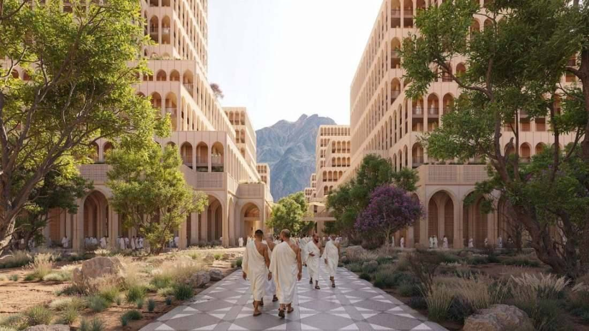

01 · People
Places designed around people.
Every plan starts with the people who will live, work, pray and visit there: human-scale streets, shade, walkability and public spaces where communities can gather.

Kidana Al Khaif · Mina, Makkah →